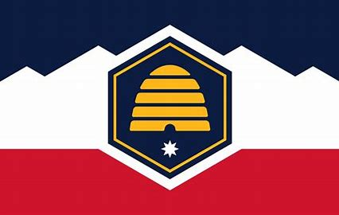

About me

My name is Emily Walker, and I live in the vibrant state of Utah. I’m passionate about a wide range of activities, from coding and creating art to diving into forensic science, exploring engineering, and getting lost in a good book. Whether I'm working on a new software project, crafting something artistic, or learning something new, I love combining creativity and curiosity in everything I do.
Utah
Utah, a landlocked state in the Western U.S., is bordered by Colorado, Arizona, and Nevada. Known for its stunning natural landscapes, including the Rocky Mountains and the Great Salt Lake, Utah has a population of over 3 million, making it the 13th-largest state in the country. In a move to reflect its rich history and vibrant culture, Utah recently unveiled a new state flag designed by Jonathan Martin.